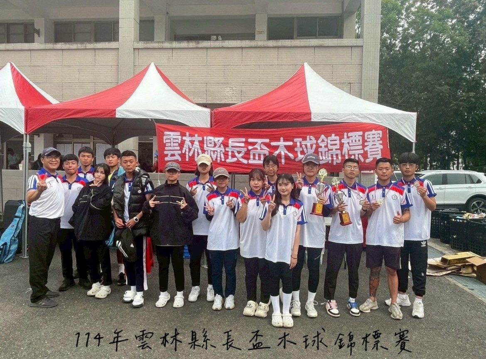
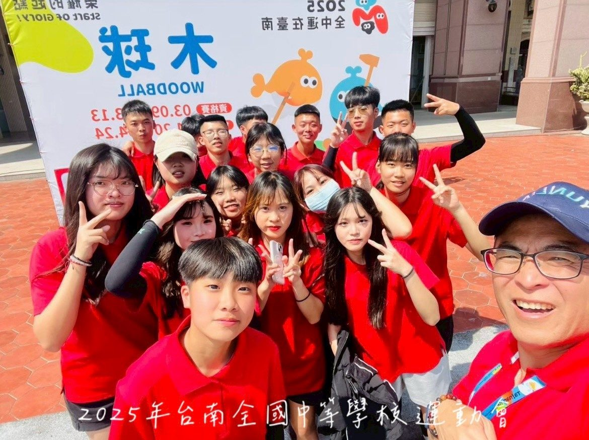
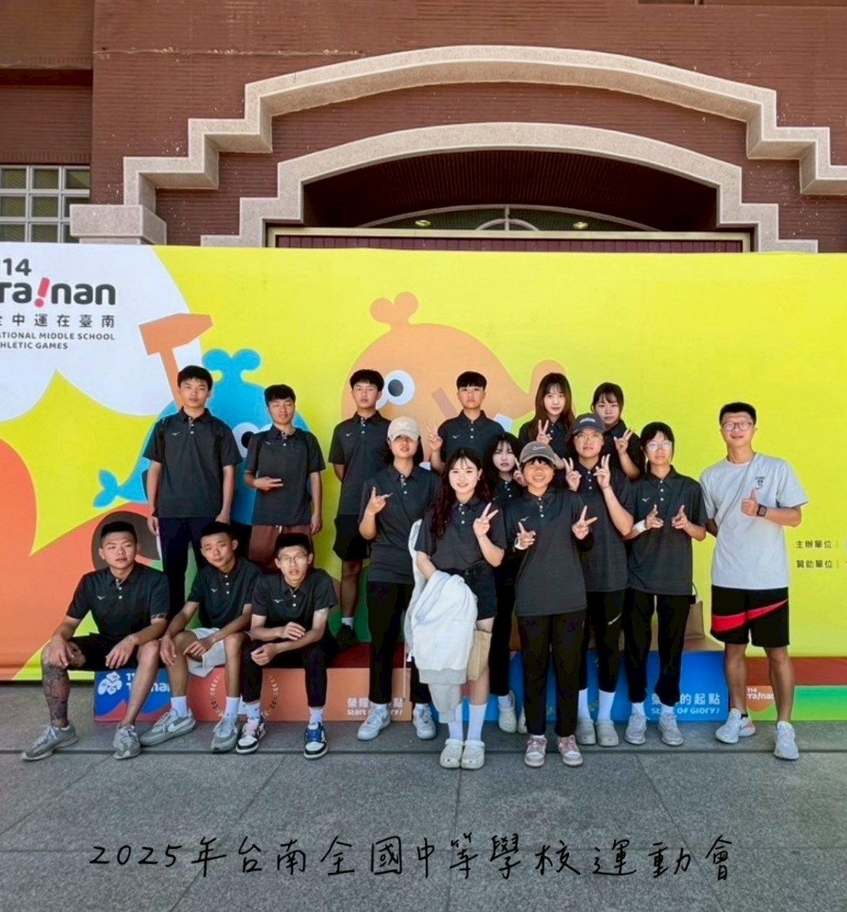
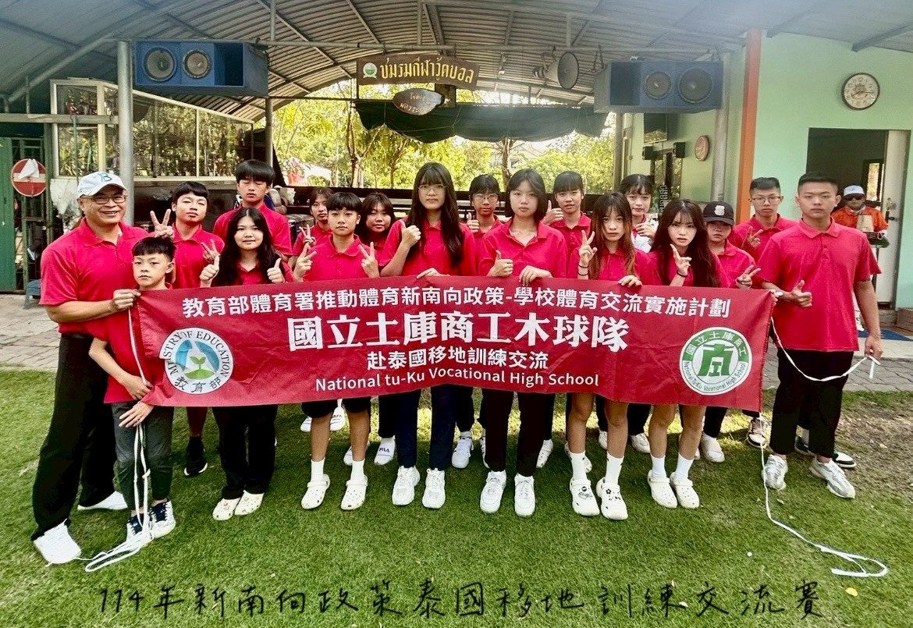

01我的故事
從逆境中崛起——國立土庫商工木球隊的奮鬥之路
在台灣的偏鄉雲林，有一群孩子，他們來自低收入家庭、單親或隔代教養的背景，生活充滿挑戰，但他們從不向命運低頭。對他們而言，木球不只是一項運動，而是一道照亮未來的希望之光。他們在國立土庫高級商工職業學校的木球隊中，找到了夢想的方向，並透過不懈的努力，在國內外賽事上綻放光芒。
🌟 奮鬥的起點，改變人生的契機
18年前，土庫商工木球隊誕生，承襲雲林地區扎根已久的木球傳統，讓熱愛木球的孩子們能夠持續訓練，延續夢想。起初，資源匱乏，訓練器材不足，參賽經費捉襟見肘，但這群孩子從不放棄。他們在烈日下揮汗如雨，每天刻苦練習，努力追趕城區資源豐富的對手，只為了站上更高的舞台，證明自己。
🏆 以汗水與堅持，鑄造無數榮耀
經過不懈的努力，木球隊開始在比賽中嶄露頭角。他們在全國中等學校運動會連續10年奪牌，並於110年創下歷年最佳成績，獲得高男組與高女組團體總錦標雙冠軍。此外，隊員們在世界盃、亞洲盃等國際賽事中，更是屢獲佳績，為國爭光。他們不僅獲得了總統與副總統的賀電，更讓世界看見來自台灣偏鄉的堅持與韌性。
🎓 運動之外，為孩子開創未來
木球隊的成就不僅止於球場，他們也積極輔導學生升學，幾年來，已有50多位隊員成功考入國立頂尖大學。對於這些來自弱勢家庭的孩子來說，木球不僅是一種競技，更是一座通往未來的橋樑，帶領他們翻轉人生，擁抱更多可能。
🤝 社會的支持，點燃更多希望
然而，要維持這樣的成就，並持續培養更多優秀選手，仍需要社會各界的關注與支持。訓練器材、移地訓練、比賽經費，每一項都對這些孩子至關重要。我們誠摯邀請社會大眾與企業一同加入，成為這段夢想旅程的助力，為孩子們提供更好的訓練環境，讓他們能夠繼續在木球場上揮灑汗水、創造奇蹟。
這群來自偏鄉的孩子，憑藉不懈的努力與對夢想的執著，走出了一條屬於自己的光榮之路。他們用球桿寫下的不只是比賽紀錄，更是一個關於勇氣、堅持與希望的動人故事。讓我們一起支持他們，陪伴他們迎向更璀璨的未來！💪🔥




推薦理由
國立土庫高級商工職業學校木球隊——夢想與希望的搖籃
孩子是國家未來的希望，體育運動不僅能鍛鍊體能，更能培養毅力、紀律與團隊精神。國立土庫高級商工職業學校木球隊自95年9月1日成立以來，已走過18個年頭，為無數學生提供了一個發展體育專長、實現夢想的舞台。
本校木球隊的學生主要來自雲林縣及鄰近鄉鎮，其中許多孩子來自低收入戶、單親家庭或隔代教養的背景，家庭經濟狀況普遍不佳。然而，這些孩子雖然無法改變原生環境，卻能憑藉努力與堅持，在木球運動中找尋希望，書寫屬於自己的未來。
卓越的競技成就
在資源有限的條件下，土庫商工木球隊憑藉不懈的努力，在全國中等學校運動會及各大比賽中屢創佳績。自101年至今，木球隊在全中運、岳王盃等全國及國際賽事中屢獲殊榮，曾多次榮獲團體總錦標冠軍，並在個人項目中摘金奪銀，更有多位選手進入國家代表隊，為台灣爭光。
資源短缺，亟需支持
木球運動是台灣本土發明的運動，但由於學校資源有限，支出的項目需審慎規劃。尤其是訓練器材、移地訓練與比賽經費，皆為球隊發展的關鍵支出。為了讓這些孩子能夠繼續參與高水平賽事、持續提升競技實力，我們誠摯邀請社會各界伸出援手，共同支持這群懷抱夢想的年輕選手。
邀請您的加入，一起成就未來
您的支持，將為這些孩子提供更完善的訓練環境，幫助他們站上更大的舞台。每一筆贊助，都是一份對體育、對教育的深遠投資。我們誠摯邀請企業、組織及熱心人士共同成為這場夢想旅程的一部分，攜手改變孩子們的未來，讓台灣的木球運動繼續發光發熱！
讓我們一起為這些孩子點燃希望，成就無限可能！ 🎯🔥